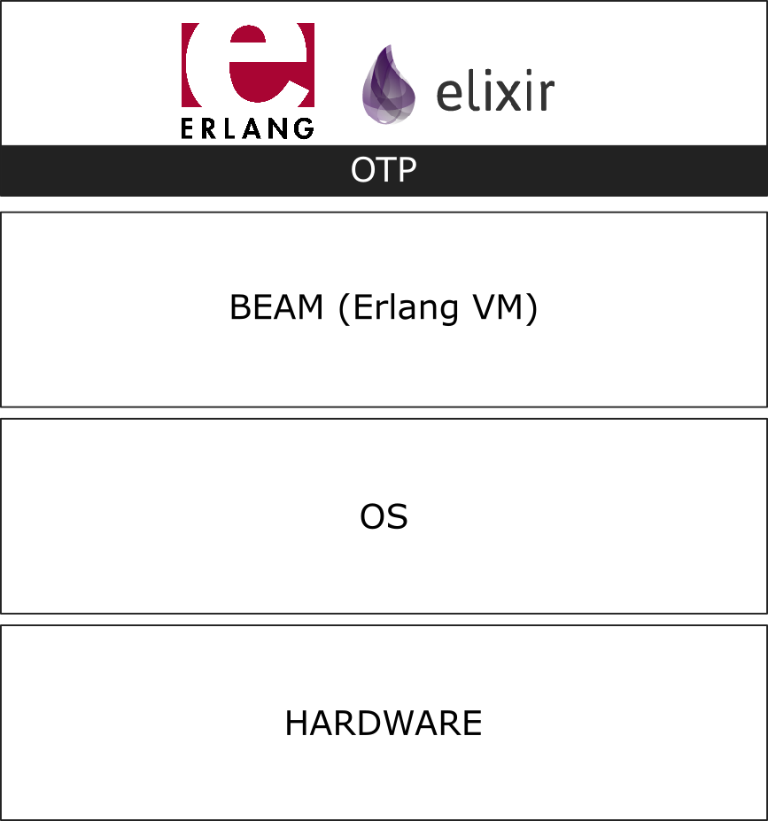
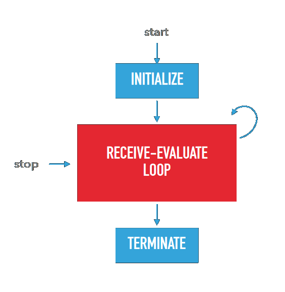
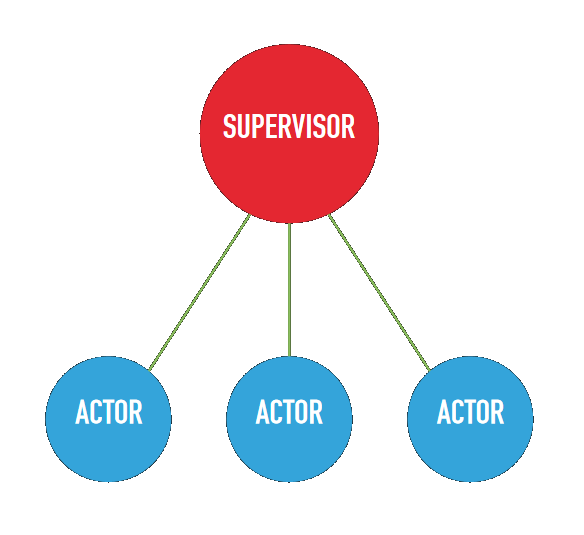
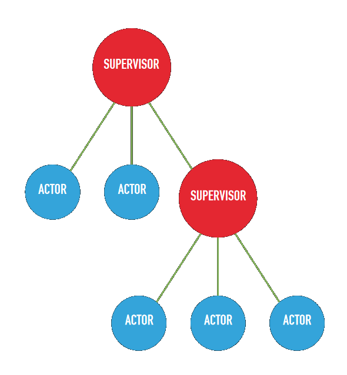

<!doctype html>
<html lang="en">
    <head>
        <meta charset="utf-8">
        <meta name="viewport" content="width=device-width, initial-scale=1.0, maximum-scale=1.0, user-scalable=no">

        <title>Functional Programming</title>
        <link rel="stylesheet" href="./css/reveal.css">
        <link rel="stylesheet" href="./css/theme/black.css" id="theme">
        <link rel="stylesheet" href="./css/highlight/zenburn.css">
        <link rel="stylesheet" href="./css/print/paper.css" type="text/css" media="print">
          <link rel="stylesheet" href="./css/slides.css">


    </head>
    <body>

        <div class="reveal">
            <div class="slides"><section  data-markdown><script type="text/template"><link rel="stylesheet" href="https://use.fontawesome.com/releases/v5.0.13/css/all.css" integrity="sha384-DNOHZ68U8hZfKXOrtjWvjxusGo9WQnrNx2sqG0tfsghAvtVlRW3tvkXWZh58N9jp" crossorigin="anonymous">
<h1> Functional Programming</h1>
</script></section><section  data-markdown><script type="text/template">
Would you recognize this pattern ?

```
i = 0
a = []
label:
a.append(f(list[i]))
i = i + 1
if i < len(list):
   goto label
```
</script></section><section  data-markdown><script type="text/template">
There is an evolution in programming concepts :<br>

```
goto > while > for > map
```

Each evolution is easier to reason about, but less powerfull than the last one.
</script></section><section  data-markdown><script type="text/template">
<h2 class="title">Part I : Genesis</h2>
<small>Basic concepts</small>
</script></section><section  data-markdown><script type="text/template">
<h4 class="title">In the beginning, there was math...</h4>

<p class="left half"><small>
    <br>
    <b>Alan Turing (1912 - 1954)</b><br>
    Basically the founder of modern computer science
</small></p>

<p class="right half"><small>
    <br>
    <b>Alonzo Church (1903 - 1995)</b><br>
    Inventor of the λ-calculus, writer of the proof of the undecidability of the «Entscheidungsproblem»
</small></p>
</script></section><section  data-markdown><script type="text/template">
<h4 class="title">λ-calculus</h4>
<p class="t">
λ-calculus is a <b class="hl">formal system</b> to express computation, in the same way that Turing-Machines are a system to represent computation. It has been proven that λ-calculus is <b>Turing-complete</b>.<br>
<br>
In λ-calculus, to make things simple, <b class="hl">everything is a function and all functions take only 1 argument</b>. Functions may be "applied" to arguments. A function application is written like this :
</p>

λx.x

<br><br>

<small>
Lisp (1958) was derived from this system.
</small>
</script></section><section  data-markdown><script type="text/template">
<h4 class="title">The Core Principles</h4>

<p class="t">
<span class="hl title">First Class Functions</span><br>
The capacity of a language to handle functions just like any other object, and pass them as arguments, return them as values etc...
<br><br>
<span class="hl title">Pure functions</span><br>
Functions cannot have any side-effects and must depend entirely o ont 
<br><br>
<span class="hl title">Immutability</span><br>
Data can never change. Only new data can be created.
<br><br>
<p class="t">
<span class="hl title">Currying</span><br>
Functions can be partially applied. More on that later.
</p>
</script></section><section  data-markdown><script type="text/template">
<h4 class="title">First Class Functions</h4>

Functions are first class objects, like integers, strings or any other object, and can be returned and passed as arguments.<br>
<br>
Example :
```
map
filter

# Workshop : write a memoization function of
#            1-argument functions.
```

<p class="didyouknow"><i class='fas fa-info-circle'></i>A function that takes another function as argument is called a <b>higher-order function</b>.</p>
</script></section><section  data-markdown><script type="text/template">
<h4 class="title">First Class Functions</h4>

Solution :
```
def memoizer(f):
    history = {}
    def memoized(arg):
        if arg not in history:
            history[arg] = f(arg)
        return history[arg]
    return memoized
```
</script></section><section  data-markdown><script type="text/template">
<h4 class="title">Pure Functions</h4>

Pure functions have no side-effects. Their result is purely a function of their arguments and <b class="hl">not</b> of the execution environment.<br>
<br>
Example :
```
# Which of these functions are pure ?
lambda x: len(x)
lambda x: random.randint(0, x)
lambda x: 17
lambda x: time.now()
```

</script></section><section  data-markdown><script type="text/template">
<h4 class="title">Pure Functions</h4>

Solution :
```
# Which of these functions are pure ?
lambda x: len(x)                == "Pure"
lambda x: random.randint(0, x)  == "Impure"
lambda x: 17                    == "Pure"
lambda x: time.now()            == "Impure"
```
<br>
<p class="didyouknow"><i class="fas fa-exclamation" style="color:red"></i>No program can be entirely pure. That program would be useless.<br>It is more about being aware of which parts are pure and which are not.</p>
</script></section><section  data-markdown><script type="text/template">
<h4 class="title">Immutability</h4>

Variables can never change value in a given scope, and data can never change. Whenever data has to be modified, it is first copied then mutated and then affected to a given variable.<br>
<br>
Example :
```
# Is this function immutable ?
def map(f, l):
    for element in l:
        yield f(l)

# Write an immutable sum over a list of integers.
```

<p class="didyouknow"><i class='fas fa-info-circle'></i>Most languages use copy-on-write and highly optimised memory representations.</p>
</script></section><section  data-markdown><script type="text/template">
<h4 class="title">Immutability</h4>

Solution :
```
def immutable_sum(l, start=0):
    if len(l) > 0:
        return immutable_sum(l[1:], start=start + l[0])
    else:
        return start
```

<p class="didyouknow"><i class='fas fa-info-circle'></i>Functional languages are always optimized for tail-end recursion.</p>
<p class="didyouknow"><i class='fas fa-info-circle'></i>There is a general abstraction called `fold` that calculates `f(l[0], f(l[1], ... f(l[n], start) ... ))`</p>
</script></section><section  data-markdown><script type="text/template">
<h4 class="title">Currying</h4>

A function may be partially applied.<br>
<br>
Example :
```
# This is valid code in functional programming :
def add(a, b):
    return a + b

add5 = add(5)
add5(10) == 15
```
</script></section><section  data-markdown><script type="text/template">
<h4 class="title">Currying</h4>

A function may be partially applied.<br>
<br>
A better example :
```
# A database querier !
def query_database(mongo_client, query):
    return mongo_client['db']['collection'].find(query)

querier = query_database(pymongo.MongoClient())
```

<p class="didyouknow"><i class='fas fa-info-circle'></i>Is this a pure function ?</p>
</script></section><section  data-markdown><script type="text/template">
<h4 class="title">But why all the hassle ?</h4>


</img>
</script></section><section  data-markdown><script type="text/template">
Modern programming has 2 main challenges :<br>
Debugging & Parallelism<br>

</script></section><section  data-markdown><script type="text/template">
<p class="t">
<span class="hl title">First Class Functions & Currying</span><br>
First class functions allow for more powerful abstractions. Map and filter are an example but there are many more. Each abstraction  reduces the complexity of the code that must be kept in memory. Resulting code will be easier to understand.
<br><br>
<span class="hl title">Pure functions & Immutability</span><br>
These allow for easy unittesting, better bug reproducibility and easier refactoring of code. Also side-effects are painfull when debugging code.<br>
Shared memory is a lot easier with immutability and avoid state corruption.
</script></section><section  data-markdown><script type="text/template">
<h2 class="title">Part II : Types</h2>
<small>Or why Java sucks.</small>
</script></section><section  data-markdown><script type="text/template">
Types can be :
<p class="left-col t">
<span class="hl">Static</span><br>
A variable must always have a given type and it cannot change types during its lifetime. The compiler will complain whenever a type is mismatched.
<br><br>
<span class="didyouknow"><i class='fas fa-info-circle'></i>Haskell, Elm or Idris are static</span>
</p>

<p class="right-col t">
<span class="hl">Dynamic</span><br>
Variables have no specifice type, every function call just hopes that the operations done on the data will succeed.
<br><br>
<br><br>
<span class="didyouknow"><i class='fas fa-info-circle'></i>Erlang, Clojure or Lisp are dynamic</span>
</p>
</script></section><section  data-markdown><script type="text/template">
<h4 class="hl">Static</h4>

<p class="left-col t">
<i class="hl fas fa-plus-circle"></i><br>
A good type system helps you thinking in an abstract way about complex data.<br>
<br>
If it compiles : ship it.<br>
<br>
Refactoring is guided by compiler errors.
</p>

<p class="right-col t">
<i class="hl fas fa-minus-circle"></i><br>
The compiler <i>will</i> yell at you in the beginning.<br>
<br>
It is a lot harder to develop interactively using a REPL.
</p>
</script></section><section  data-markdown><script type="text/template">
<h4 class="hl">Dynamic</h4>

<p class="left-col t">
<i class="hl fas fa-plus-circle"></i><br>
Fast takeoff. You can run code instantly. It makes it a lot better for small chunks of code or scripts.<br>
<br>
You can grow a module or function organically.<br>
<br>
Data is composed of easy types that all have a lot of powerfull functions already written.<br>
</p>

<p class="right-col t">
<i class="hl fas fa-minus-circle"></i><br>
Runtime bugs are a lot more likely.<br>
<br>
Refactoring is <b>hard</b>.
</p>
</script></section><section  data-markdown><script type="text/template">
<small>
Let's focus just a little on statically typed languages.<br>
Examples are Elm, but you don't need to understand it.
</small>
</script></section><section  data-markdown><script type="text/template">
<h4 class="title">More Core Principles</h4>

<p class="t">
<span class="hl title">Type Inference</span><br>
Most types are infered at compile time and don't need to be specified.
<br><br>
<span class="hl title">More type types</span><br>
Category Theory types are a little richer than in OO.
<br><br>
<span class="hl title">No Null</span><br>
No null, no undefined, no void, no None. Just category theory.
<br><br>
</p>
</script></section><section  data-markdown><script type="text/template">
<h4 class="title">Type inference</h4>

<br>
Typical Java code :
```
public class Student {
    private String name;
    public String getName() {
        return name;
    }
}
String name = s.getName();
```
</script></section><section  data-markdown><script type="text/template">
<h4 class="title">Type inference</h4>

<br>
How about this ?<br>
<small>Is there ambiguity about the type of `name` ?</small>
```
public class Student {
    private String name;
    public getName() {
        return name;
    }
}
name = s.getName();
```
<small>In practice, modern compilers require no type annotations at all.</small>
</script></section><section  data-markdown><script type="text/template">
<h4 class="title">More type types</h4>

Quick Example :
```
type Maybe
    = Nothing
    | Just a
```
<small>
This is an "Algebraic Data Type" and is used a lot in FP.<br>
It is like an `Enum` on steroids.
</small>
</script></section><section  data-markdown><script type="text/template">
<h4 class="title">No Null</h4>

What is the type of `s` here ?
```
public class ShapeFactory {
   public Shape getShape(String shapeType){
      if(shapeType == "CIRCLE"){
         return new Circle();
      } else if(shapeType == "RECTANGLE"){
         return new Rectangle();
      }
      return null;
   }
}

ShapeFactory shapeFactory = new ShapeFactory();
Shape s = shapeFactory.getShape("RECTANGLE");
```
</script></section><section  data-markdown><script type="text/template">
<h4 class="title">No Null</h4>

And now ?
```
public class ShapeFactory {
   public Shape getShape(String shapeType){
      if(shapeType == "CIRCLE"){
         return new Circle();
      } else if(shapeType == "RECTANGLE"){
         return new Rectangle();
      }
      return null;
   }
}

ShapeFactory shapeFactory = new ShapeFactory();
Shape s = shapeFactory.getShape("RECTANLGE");
```
<span class="didyouknow"><i class='fas fa-info-circle'></i>Both of these examples compile just fine.</span>
</script></section><section  data-markdown><script type="text/template">
<h4 class="title">No Null</h4>

This is also problematic in other languages :
```
TypeError: 'NoneType' object is not subscriptable
```
```
TypeError: undefined is not a function.
```
</script></section><section  data-markdown><script type="text/template">
<h4 class="title">Intermission</h4>
</script></section><section  data-markdown><script type="text/template">
<h6 class="title">Popularity</h6>

<small>
- Facbook Messenger written in Reason ML<br>
- React / Redux based on pure functions<br>
- 90% of internet traffic goes through Erlang (Cisco)<br>
- Naughty Dog made Lisp dialect (GOAL) (can be found in The Last Of Us)<br>
- WhatsApp is Erlang, Discord is Elixir<br>

</small>

<p class="left half" style="font-size:0.5em">
<span class="hl">TIOBE</span><br>
- Scala #23<br>
- Lisp #27<br>
- Clojure #33<br>
- Erlang #38
</p>

<p class="right half" style="font-size:0.5em">
<span class="hl">StackOverflow</span><br>
- TypeScript 17.4%<br>
- Scala 4.4%
</p>
</script></section><section  data-markdown><script type="text/template">
<h2 class="title">Part III : Elixir</h2>
</script></section><section  data-markdown><script type="text/template">
<h4>The Erlang Stack</h4>

</img>


<span class="didyouknow"><i class='fas fa-info-circle'></i>BEAM = Bogdan/Björn's Erlang Abstract Machine</span>
<span class="didyouknow"><i class='fas fa-info-circle'></i>OTP = Open Telecom Platform</span>
</script></section><section  data-markdown><script type="text/template">
<div class="left half">
    <br>
    Created in 1987 by Ericsson<br>
    <br>
    Latest Version : 20.2 (December 2017)
</div>

<div class="right half">
    <br>
    Created in 2012 by José Valim Hernàndez<br>
    <br>
    Latest Version : 1.6.5 (May 2018)
</div>
</script></section><section  data-markdown><script type="text/template">
<h4 class="title">The Erlang Core Principles</h4>

<p class="t">
<span class="hl title">Functional Programming</span><br>
See above.
<br><br>
<span class="hl title">Strong, dynamic, typing</span><br>
See above.
<br><br>
<span class="hl title">Actor Model</span><br>
Actors are independent processes that have their own code, data and state.
<br><br>
<span class="hl title">OTP</span><br>
This "standard library" is built around the core ideas of <b>concurrency, fault tolerance and distribution</b>.
</p>
</script></section><section  data-markdown><script type="text/template">
<h4 class="title">Actor Model</h4>

Normal functional programs :

</img>
</script></section><section  data-markdown><script type="text/template">
<h4 class="title">Actor Model</h4>

Erlang :

</img>
</script></section><section  data-markdown><script type="text/template">
<h4 class="title">Actor Model</h4>

Actors have lifcecycles

</img>
</script></section><section  data-markdown><script type="text/template">
<h4 class="title">Actor Model</h4>

Actors have supervisors

</img>
</script></section><section  data-markdown><script type="text/template">
<h4 class="title">Actor Model</h4>

Supervisors have supervisors

</img>
</script></section><section  data-markdown><script type="text/template">
<h4 class="title">Actor Model</h4>

<br>

<p class="t" style="padding-left:300px;">
"Erlang was designed for<br>
wiriting concurrent programs<br>
that run <b class="hl">forever</b>."<br>
</p>
<i style="font-size:0.6em !important;right:150px;position:absolute;">A History of Erlang - Joe Amstrong</i>

<br>

<small>
With Erlang, Ericsson managed to get a switch to 9-nines availability.<br>
That is less than 1s downtime over 20 years.
</small>
</script></section><section  data-markdown><script type="text/template">
<h4 class="title">OTP</h4>

<br>

OTP is a large library that implement<br> <b class="hl">behaviours</b> that can be<br>
reused to write Erlang code.
</script></section><section  data-markdown><script type="text/template">
<h4 class="title">Elixir</h4>

<br>

Elixir is just a new syntax over Erlang.<br>
</script></section><section  data-markdown><script type="text/template">
https://wandbox.org/  
https://github.com/eXenon/fp-presentation
</script></section><section  data-markdown><script type="text/template">
Hello, world !

```
defmodule MyFirstModule do
    def myfirstfunction() do
        IO.puts "Hello, world !"
    end
end

MyFirstModule.myfirstfunction
```
</script></section><section  data-markdown><script type="text/template">
Pattern matching is very common in FP.<br>
Elixir has special syntax to use it in functions :

```
defmodule Users do
    def login("alice", "al1c3s3cure"):
        IO.puts "Welcome, Alice !"
    end
    def login("bob", "b0bs3cure"):
        IO.puts "Welcome, Bob !"
    end
    def login(_, _):
        IO.puts "Unknown user or bad password..."
    end
end
```
</script></section><section  data-markdown><script type="text/template">
Functional programming is, well, a lot of functions.<br>
The pipe operator allows to chain functions :

```
defmodule Operations do
    def op1(a) do
        String.downcase(a)
    end
    def op2(a, b) do
        a <> b
    end
end

"FOO" |> Operations.op1 |> Operations.op2("bar") |> IO.puts
```
</script></section><section  data-markdown><script type="text/template">
Elixir is just a syntax over Erlang.<br>
This means every Erlang library is available :

```
defmodule Wait do
    def long_calculation() do
        :timer.sleep(3000)
    end
end
```
<span class="didyouknow"><i class='fas fa-info-circle'></i>Notice how Wandbox times out at 5 seconds</span>
</script></section><section  data-markdown><script type="text/template">
But the best part of the BEAM are still the threads :

```
defmodule Wait do
    ...
end

task1 = Task.async(fn -> Wandbox.hello end)
task2 = Task.async(fn -> Wandbox.hello end)
Task.await(task1)
Task.await(task2)
```
</script></section><section  data-markdown><script type="text/template">
Messaging system :

```
defmodule Actor do
    def listen() do
        IO.puts "Waiting for messages..."
        receive do
            "hello" -> IO.puts "Hi there !"
                       listen
            "bye" -> IO.puts "Bye !"
        end
    end
end

pid = spawn fn -> Actor.listen end
send pid, "hello"
send pid, "bye"
```
</script></section><section  data-markdown><script type="text/template">
Thinking in processes :<br>
- A web session is a process
- A shopping cart is a process
- Every element in a game is a process
</script></section><section  data-markdown><script type="text/template">
A rich ecosystem :

<small class="t">
<p class="hl">Mnesia</p>
Database on the BEAM<br>
<br>
<p class="hl">ETS</p>
Redis on the BEAM<br>
<br>
<p class="hl">Phoenix</p>
NGINX & Ruby on Rails on the BEAM<br>
<br>
</small>
</script></section><section  data-markdown><script type="text/template">
<h2>Conclusion</h2>

Functional programing helps thinking about problems.
But it is rarely sufficient and is best used in combination with imperative.<br>
<br>
A functional core, with an imperative shell.
</script></section><section  data-markdown><script type="text/template">
<h4 class="title">Questions ?</h4>
</script></section><section  data-markdown><script type="text/template">
<h6 class="title">Further material</h6>

<div class="left half t">
<p class="hl">Books</p>
- Programming Elixir<br>
- Hands on Haskell<br>
- Elements of Clojure<br>
- Category Theory for Programmers
<br>
<br>
<p class="hl">Tutorials</p>
- Elixir Docs<br>
- Elixir Etudes by O'Reilly<br>
- Elm/Phoenix by Pragmatic Studio
</div>

<div class="right half t">
<p class="hl">Podcasts</p>
- Lambda Cast<br>
- Elm Town<br>
- Reason Town<br>
- Functional Geekery
<br>
<br>
<p class="hl">Talks</p>
- FP by John Carmack<br>
- Effective Programs by Rich Hickey<br>
- Functional Core, Imperative Shell by DAS<br>
</div>
</script></section></div>
        </div>

        <script src="./lib/js/head.min.js"></script>
        <script src="./js/reveal.js"></script>

        <script>
            function extend() {
              var target = {};
              for (var i = 0; i < arguments.length; i++) {
                var source = arguments[i];
                for (var key in source) {
                  if (source.hasOwnProperty(key)) {
                    target[key] = source[key];
                  }
                }
              }
              return target;
            }

            // Optional libraries used to extend on reveal.js
            var deps = [
              { src: './lib/js/classList.js', condition: function() { return !document.body.classList; } },
              { src: './plugin/markdown/marked.js', condition: function() { return !!document.querySelector('[data-markdown]'); } },
              { src: './plugin/markdown/markdown.js', condition: function() { return !!document.querySelector('[data-markdown]'); } },
              { src: './plugin/highlight/highlight.js', async: true, callback: function() { hljs.initHighlightingOnLoad(); } },
              { src: './plugin/zoom-js/zoom.js', async: true },
              { src: './plugin/notes/notes.js', async: true },
              { src: './plugin/math/math.js', async: true }
            ];

            // default options to init reveal.js
            var defaultOptions = {
              controls: true,
              progress: true,
              history: true,
              center: true,
              transition: 'default', // none/fade/slide/convex/concave/zoom
              dependencies: deps
            };

            // options from URL query string
            var queryOptions = Reveal.getQueryHash() || {};

            var options = {"transition":"none","slideNumber":true};
            options = extend(defaultOptions, options, queryOptions);
        </script>


        <script>
            Reveal.initialize(options);
        </script>
    </body>
</html>
